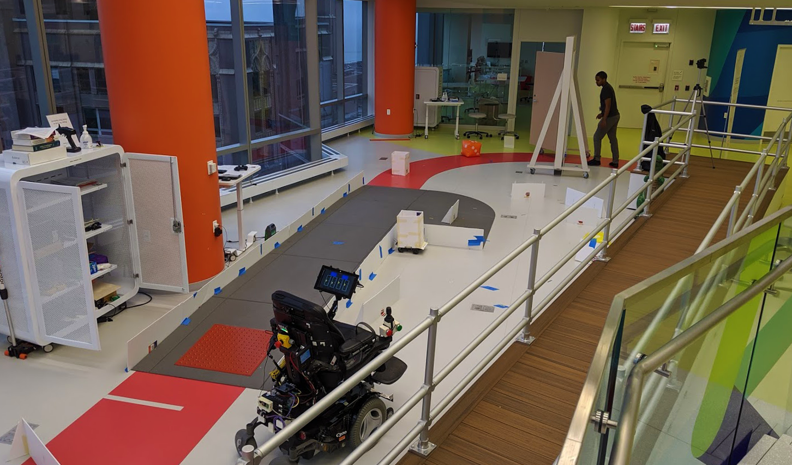

Autonomy Shifting for Autonomous Wheelchairs
 Often individuals with mobility impairments would like help when controlling their assistive devices but, not too much help. This project sought to construct a framework to determine when to automatically shift between different, discrete levels-of-autonomy for users driving an autonomous wheelchair. Each level-of-autonomy provides different levels of assistance to the user to assist them in navigating different obstacle courses. For this project, a study was run on 16 human subjects. The subjects could request changes in assistance while they navigated different obstacle courses. As they navigated the courses, the wheelchair collected information from the human, the environment, and its own planner. Machine learning methods - both classical and deep learning - were trained on the collected information streams (human, robot, environment, human-robot interaction) to determine the which information streams were most useful at classifying when to shift between levels of autonomy.
It was shown that information from the interaction between the human and the robot were most informative in predicting when to shift between autonomy levels. Further, this work showed that features learned by deep networks, in comparison to hand-engineered features, proved variable in their ability to represent autonomy switching relevant information. Finally, this work also demonstrated the utility of human-only information streams for shared-control frameworks. Almost all of this work was completed using Python. Programming the wheelchair relied on ROS and the machine learning relied on TensorFlow, KERAS, scikit-learn, and pandas.
Further Information
I worked on this project while I was a PhD student student at Northwestern University working as a member of the argallab. The argallab seeks to apply robotics autonomy to assistive technology to improve the lives of the differently abled. This lab resides within the Shirley Ryan AbilityLab, the nation's perimer rehabilitaion hospital. This work was published in IEEE IROS 2021 and one may read the article here. Furthermore, this work also resulted in my master's thesis, which may be found here. The work presented in both documents is framed differently because the article was written ~6 months after the thesis. This break allowed for a new perspective on the research and resulted the refined work presented at IROS'21. Both documents on the same data and results.
While at Northwestern, I won the US Department of Defense's National Defense Science and Engineering Graduate fellowship (NDSEG) and was admitted to the National Science Foundation's Graduate Research Fellowship Program (NSF GRFP). Following my masters, even after passing my qualifying exam and winning both national fellowships, I decided to depart Northwestern to pursue product managment.
Skills and Tools Used
- Python, C++, ROS
- Design of Human Trials, IRB
- Time Series Data Engineering
- Classical Machine Learning (scikit-learn)
- Deep Neural Networks, KERAS, TensorFlow
Awards
- NSF Graduate Research Fellowship
- US DOD National Defense Science and Engineering Graduate Fellowship